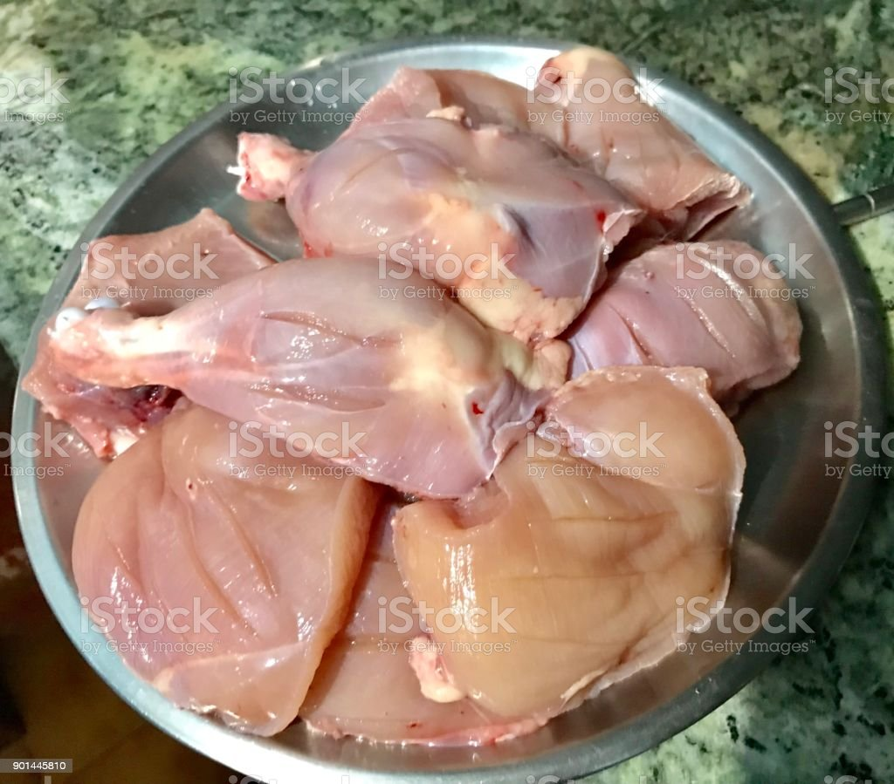
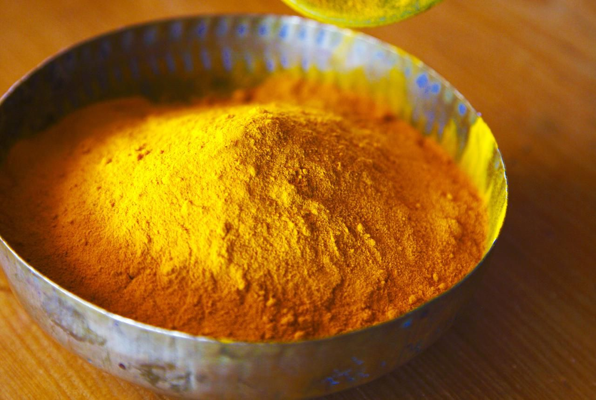
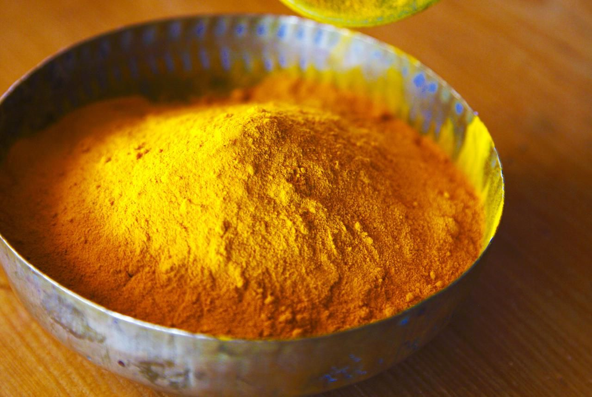
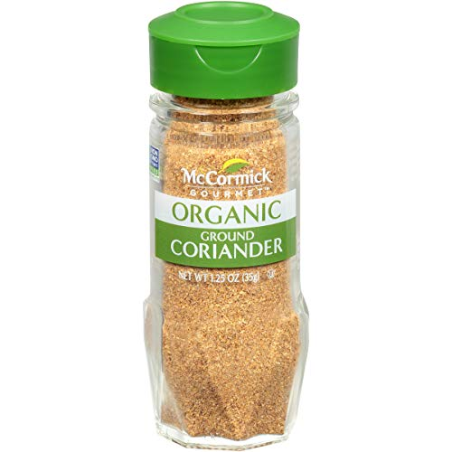
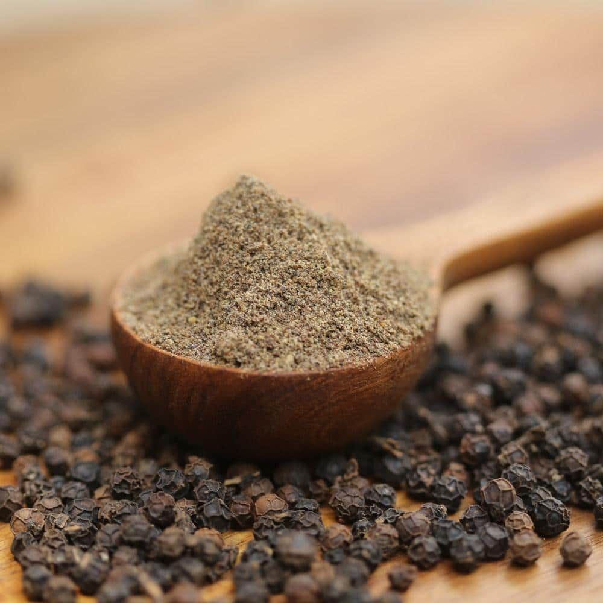
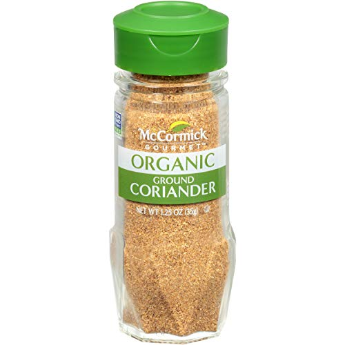
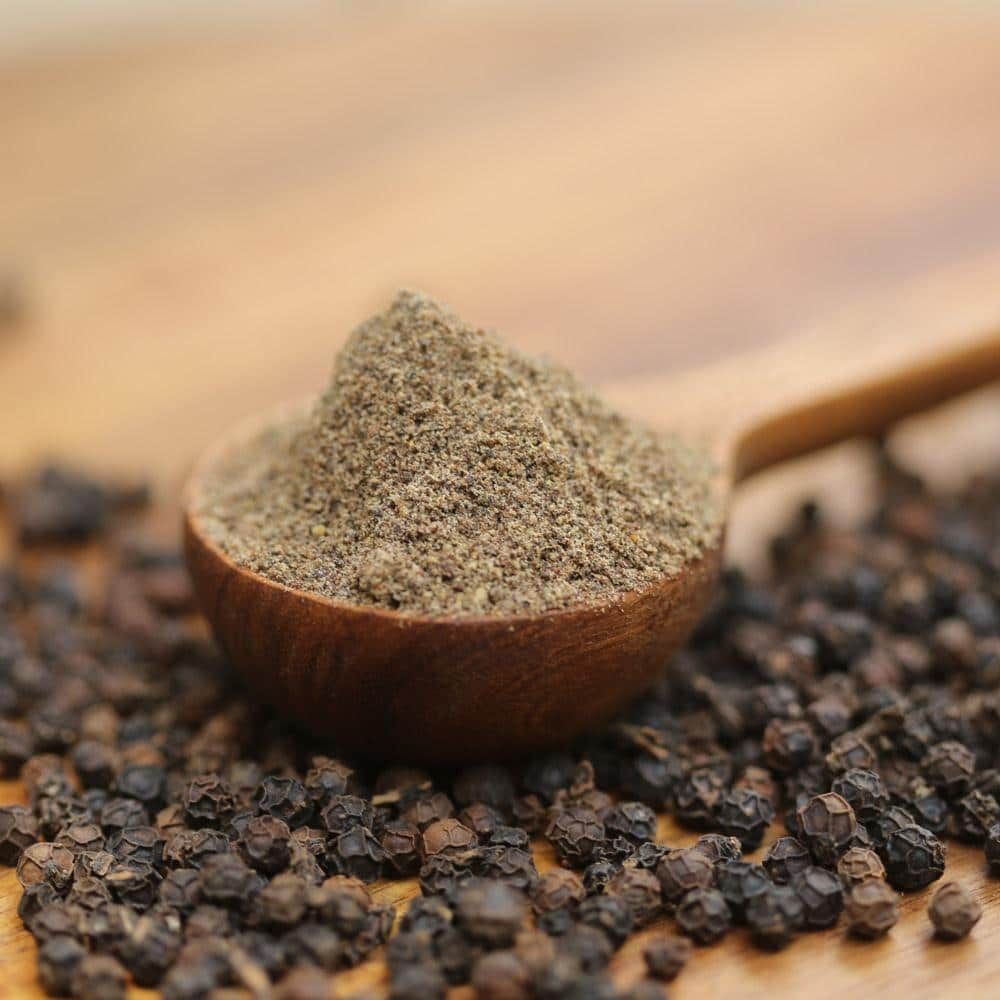
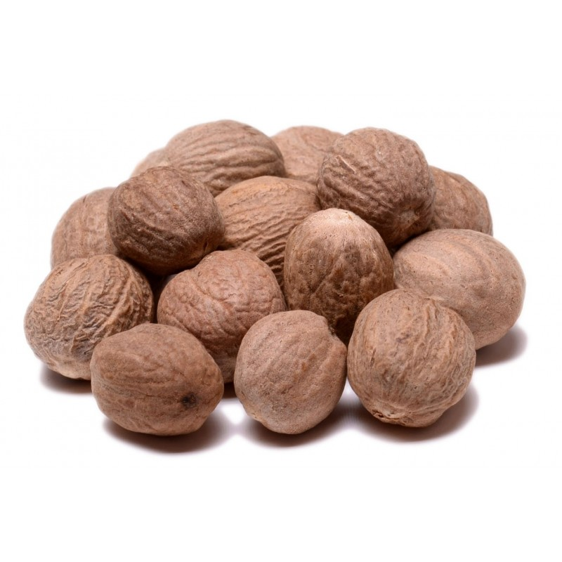
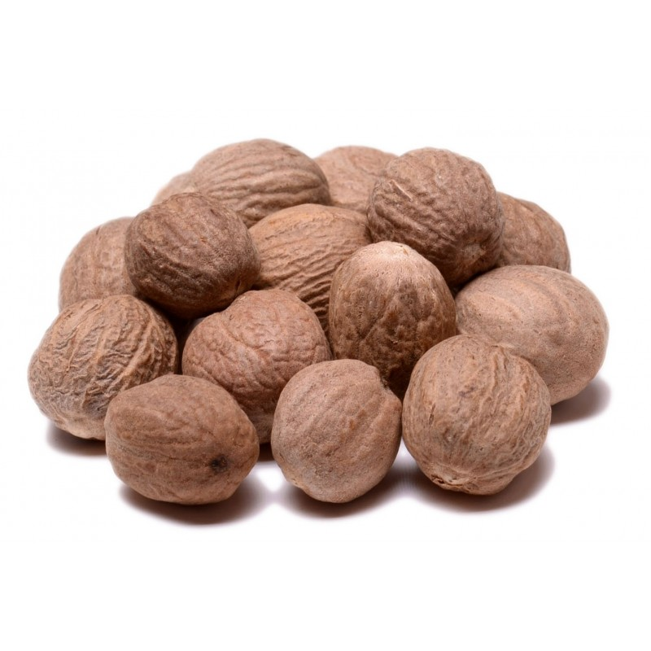
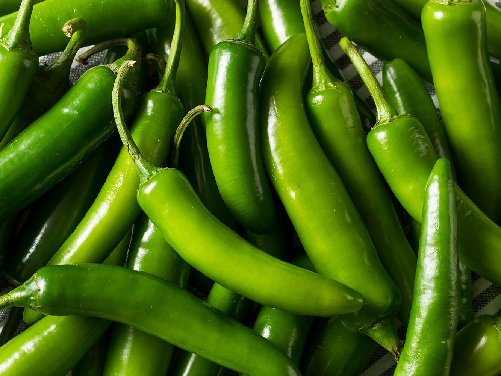

1. Soak several cups of basmati rice in water to make the rice more permeable to spices. Drain when finished.

2.In a bowl with several chicken pieces (each piece with cuts to ensure spices can flow in), marinate heavily with ground spices (cumin, red pepper, turmeric, garam masala, coriander, black pepper), salt and yogurt.

 

 




3.Fry chopped onion pieces with garlic and ginger paste in a pot with vegetable oil. When they turn brown, add the chicken and more spices like cinnamon and nutmeg and cook for 20 minutes. Add several cups of water to avoid chicken being dry.


 

4.Dump the rice over the cooked chicken. Add more salt, chopped/unchopped chilli peppers, nutmeg, cinnamon, and cloves, as well as some chopped onion pieces. Stir the food to ensure there are meat pieces on top.
5.Pour several cups of water over the mixture, and boil further until all water is removed. Once finished boiling, one can add peeled boiled eggs to the dish, and serve with salad.
Return to index